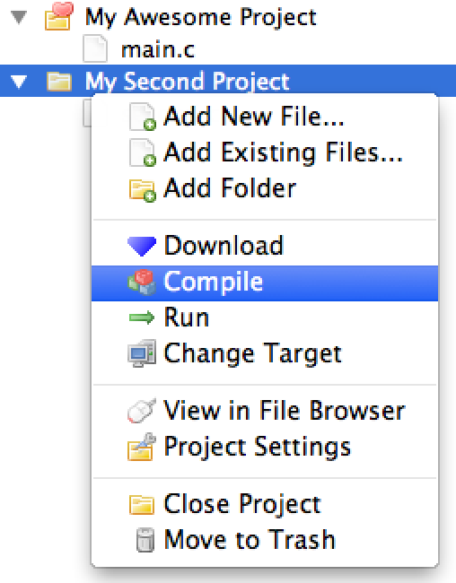

KISS IDE 5.0 Tutorial: Multiple Projects
KISS IDE is an instructional integrated development environment for the C and C++ programming languages. In this tutorial, you will create multiple projects and use them simultaneously.
Opening Multiple Projects

You can have multiple KISS projects open at a time. Go ahead, try it! Open two (or more) different projects. Or, if you don't already have projects, create some new ones. All projects will show up separately in the project sidebar. To make things more interesting, add a few files to each project.
The Active Project
You may have noticed that one of your projects has a  next to it. That icon indiciates which project is the active project. When you execute a target action from the toolbar, such as "Compile" or "Run," or any action from the "Project" menu, it will be performed on the active project. The active project is set based on the file you are currently working on, so you can change it by opening (or switching to) a file that belongs to the desired project. To try it, open some of the files you added to projects earlier, switch between them, and watch the active project change.
next to it. That icon indiciates which project is the active project. When you execute a target action from the toolbar, such as "Compile" or "Run," or any action from the "Project" menu, it will be performed on the active project. The active project is set based on the file you are currently working on, so you can change it by opening (or switching to) a file that belongs to the desired project. To try it, open some of the files you added to projects earlier, switch between them, and watch the active project change.
Acting on Other Projects
Although pressing the "Compile" and "Run" buttons will act on the active project, you can still work with other open projects without switching between files. You can right-click on any open project, active or inactive, and perform a variety of actions. For example, to compile a project that is not the active project, right-click on the project and click "Compile." This is a useful way to compile, run, modify, or close secondary projects.
Need Help?
If you have any questions or need assistance, you can call KIPR at 405-579-4609 (M-F, 8:30 a.m. - 5:00 p.m. CST) or email KIPR support.